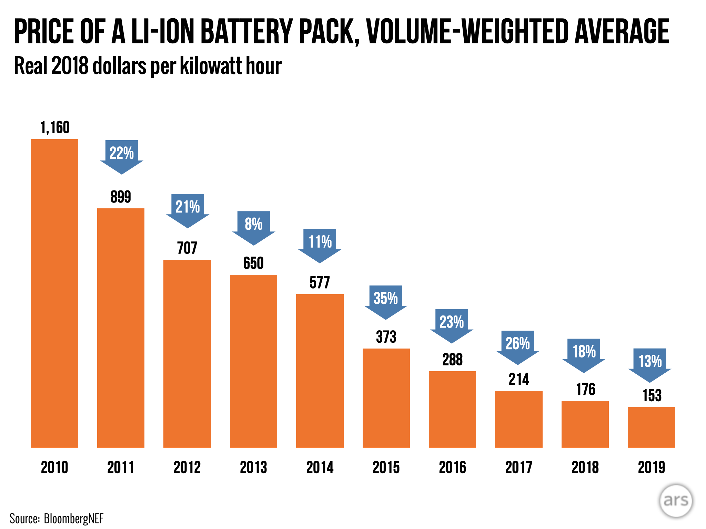
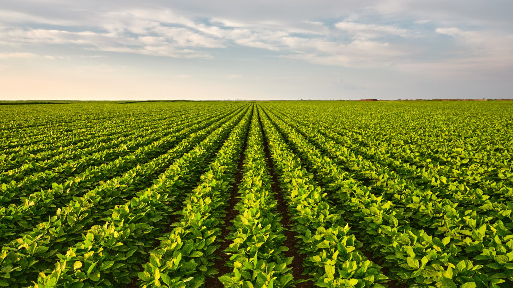
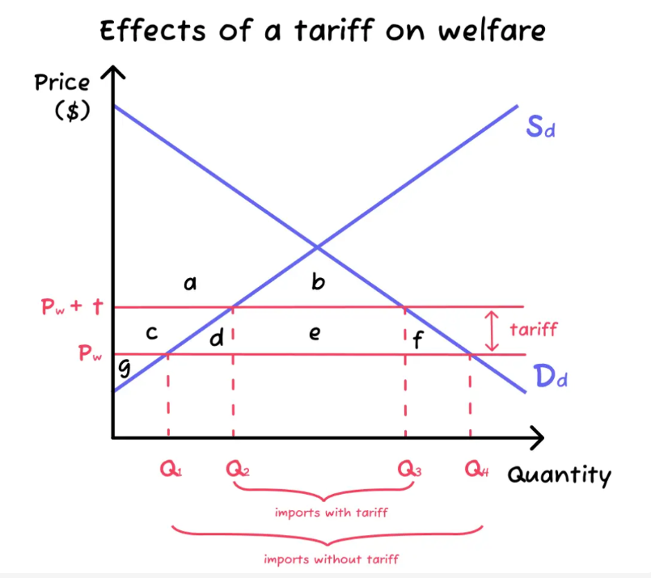

Protectionism creates a misallocation of resources, which occurs when resources are not allocated to their best use. Firstly, tariffs, quotas and subsidies distort prices. Tariffs and quotas increase the price of imported goods, while subsidies decrease the price of domestic goods. Distorting prices has consequences for resource allocation, since price is an important indicator to consumers to determine the quantity demanded.
The graph above shows how a tariff on chocolate will increase the prices of imports from P2 to P1. It will force consumers to buy less of the imported chocolate and more of the domestically-produced chocolate. In the domestic economy, more resources such as milk will be channelled into the production of chocolate, so less milk is available to produce cheese and yogurt. But the domestic economy may not be efficient at producing chocolate, and it may be very efficient at producing cheese and yogurt. Therefore, resources may be directed away from their best use, representing a misallocation of resources.
If a country raises tariffs, its trading partner may retaliate by also imposing tariffs or other barriers to trade. Sometimes, escalating retaliation can lead to a trade war, which can cause tension between countries. In 2018, a trade war sparked between the USA and China. Concerned about intellectual property and a lack of competitiveness, the USA imposed tariffs on USD 36 billion worth of Chinese exports. China soon retaliated. By 2020, the trade war had escalated to the point where the USA has imposed tariffs on more than USD 360 billion worth of Chinese goods, and China has retaliated with tariffs on more than USD 110 billion worth of US products. US farmers are unable to export soybeans to China, and have faced a significant fall in income. Many soybean farms have struggled to survive.
Semiconductors and Tariffs
The USA has long been a leader in semiconductor manufacturing, producing cutting-edge chips essential for consumer electronics,
automobiles, and military applications. However, over the past two decades, Taiwan, South Korea, and China have significantly expanded
their semiconductor industries, reducing the US share of global chip production from nearly 40% in the 1990s to about 12% today.
In response to growing reliance on foreign chip production, the US imposed tariffs and export controls on Chinese semiconductor firms.
This trade conflict has led to several key outcomes:
Higher Costs for US Tech Companies
US chip tariffs have increased production costs for American technology firms, making smartphones, laptops, and other electronic devices more expensive.
Some firms have responded by shifting manufacturing outside the US or passing costs onto consumers.
Supply Chain Shifts
Chinese companies, facing restrictions on advanced US-made chips, have accelerated domestic production efforts and sought alternative suppliers.
Meanwhile, semiconductor manufacturing has expanded in countries like South Korea and Taiwan to fill the gap left by restricted US-China trade.
Retaliation and Industry Disruption
In response to US tariffs, China imposed restrictions on exports of critical minerals like gallium and germanium, which are essential for semiconductor production.
This has disrupted global supply chains, increased costs, and led to investment shifts in alternative supply sources.
Questions to Consider
Instead of imposing tariffs, the US could explore alternative solutions such as investing in domestic semiconductor manufacturing
through incentives and subsidies. This would help boost domestic production capacity without relying on tariffs. Additionally,
forming strategic partnerships with other countries like South Korea and Taiwan could promote a more collaborative approach to
addressing concerns about semiconductor reliance on China.
The costs and benefits of semiconductor trade restrictions for stakeholders include:
USA The tariffs have resulted in higher costs for tech companies and consumers, but in the long term, they may push the US to
invest more in domestic production, reducing dependency on foreign sources. The downside is that it may hurt innovation and global competitiveness.
China: While tariffs hurt Chinese manufacturers in the short term, they also provide an opportunity to accelerate the development of
domestic capabilities and reduce reliance on US-made chips. However, the cost of shifting production to alternative sources like
Vietnam or Malaysia may be high.
South Korea and Taiwan: Both countries benefit from the shift in semiconductor manufacturing as firms look to diversify their
supply chains. However, this also puts additional pressure on them to increase production, which can lead to rising operational
costs and geopolitical tensions with China.
Taiwan: As a leading semiconductor producer, Taiwan gains from the increased demand for chips and potential investment in
its own semiconductor industry. However, Taiwan also risks becoming a larger target of Chinese retaliation due to the increasing
reliance on its chips.
Tariffs or quotas imposed on raw materials will drive up the cost of production. If a government imposes a tariff, it must be mindful of the effects on downstream industries. A downstream industry uses inputs to production that are intermediate goods. For example, the mobile phone industry is downstream from the lithium-ion battery industry. A tariff on lithium-ion batteries will increase the cost of producing mobile phones and other electronic goods in the domestic economy.
Tariffs and quotas drive up prices, particularly for domestic consumers. Tariffs act as a tax, while quotas create scarcity, both pushing costs higher. For example, India’s tariffs on imported solar panels increased project expenses, slowing renewable energy adoption. Companies turned to alternative suppliers or unofficial channels to bypass restrictions, eventually forcing India to adjust its policy. This highlights how trade barriers can unintentionally harm the industries they aim to protect.
In the early 2000s, the European Union imposed strict regulations on the import of genetically modified (GM) crops, including soybeans. These regulations were designed to protect local farming practices and ensure food safety. However, as a result, the EU heavily restricted the availability of GM soybeans, even though they were widely produced in countries like the United States and Brazil. This led to a market dominated by non-GM soybeans, reducing the variety of soy products available to European consumers. Despite the global availability of GM soybeans, protectionist measures and strict standards limited consumer choice in the EU.
Without the threat of competition from abroad, domestic firms have no incentive to be efficient. Competition forces firms to pursue the lowest-cost method of production. It creates an environment where firms must innovate and invest in research and development. Without competition, the drive to improve disappears and domestic firms may continue to use outdated technologies or processes.
A country imposes tariffs and quotas, limiting foreign competition for domestic firms.
Research:
Find an example where protectionism led to reduced efficiency in domestic firms.
Analyze:
In one paragraph, explain how protectionism can discourage innovation and efficiency.
Goal:
To understand how a lack of competition affects the drive for improvement in domestic industries.
In countries where protectionism is in place, such as tariffs or quotas on imports, domestic firms often lack the pressure to innovate or improve efficiency. For example, in the automobile industry, domestic manufacturers may continue using outdated technologies if they are shielded from foreign competition. Without the need to cut costs or improve products to stay competitive, these firms may prioritize maintaining market share rather than investing in research and development. This complacency can hinder long-term growth and reduce the overall competitiveness of the industry.
Protectionism creates a higher-cost environment, and reduces the efficiency of firms in the domestic market. For example, Ghana is the world’s top exporter of cocoa, while the Netherlands is the world’s biggest importer. If the Netherlands imposed a tariff on imports of Ghanaian cocoa, the price of cocoa would rise. This would reduce the competitiveness of Dutch chocolatiers. Chocolate is a very competitive market, and so the Netherlands would be at a great disadvantage from protectionism.
Explain how export subsidies function as forms of trade protection. [10 marks]
Definition
Export Subsidies:Financial assistance provided by the government to domestic firms to encourage exports by reducing their production costs.
Trade Protection: When the government intervenes in international trade by imposing restrictions to reduce free imports.
World Trade Organization (WTO): International organisation who is in charge of regulating and facilitating international trade.
Diagram

A supply and demand diagram for a domestic market with and without export subsidies
Introduction
Mechanism of Export Subsidies
Impact on Domestic Market:
Impact on International Market:
Economic Theory:
Credit: Ryan Yuan & RevisionDojo